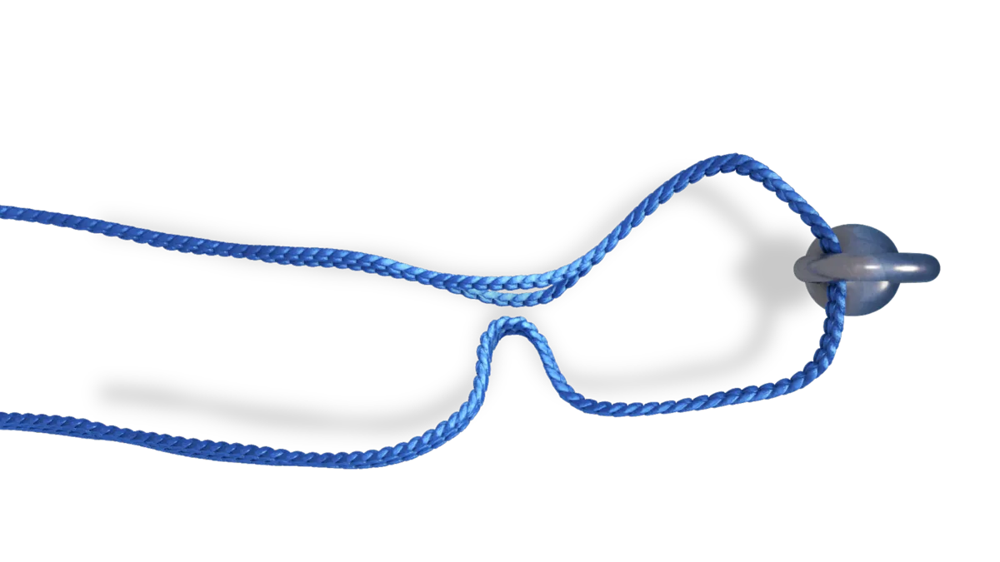
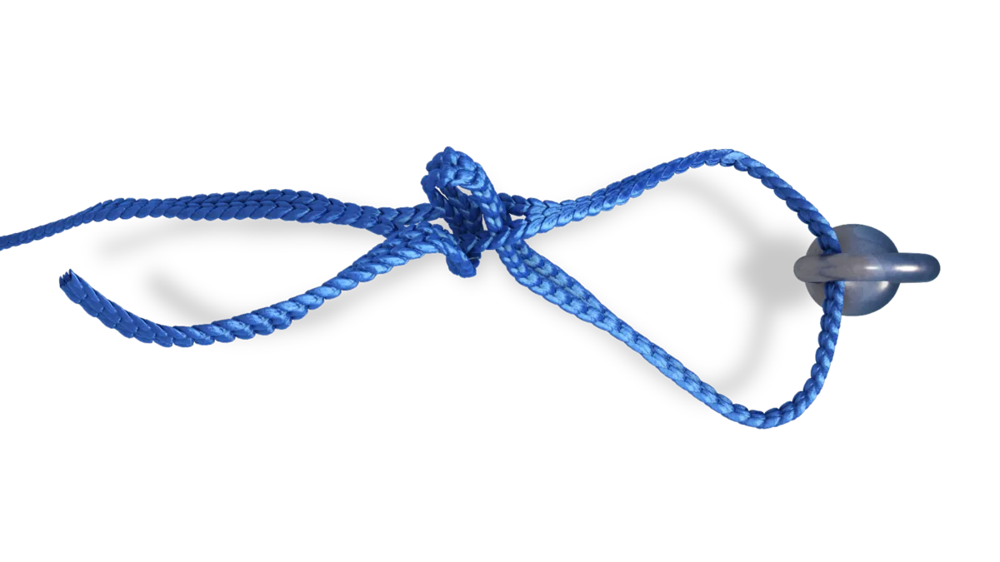
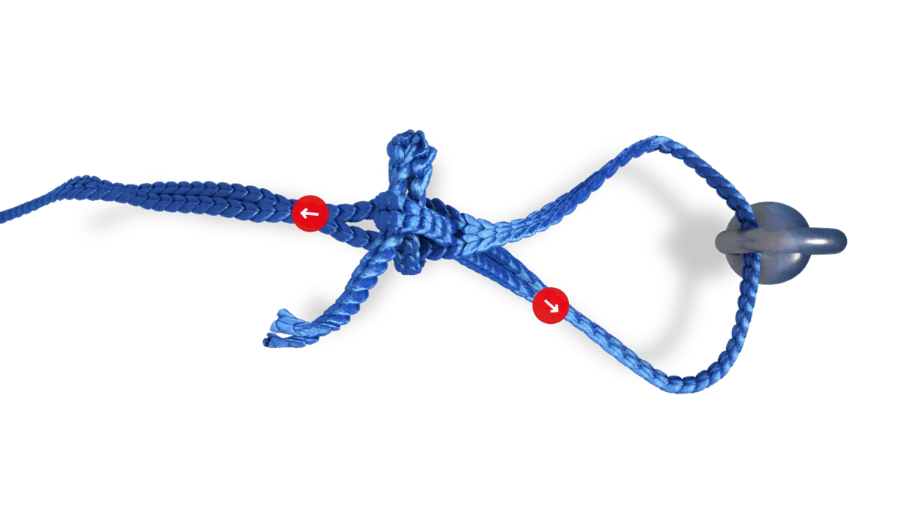

How it works
The quick loop.
The lock for closed rings, hooks and chains under heavy load. It will not untie however hard you pull, and one pull on the free end releases it in a second.
The lock for closed rings, hooks and chains under heavy load. It will not untie however hard you pull, and one pull on the free end releases it in a second.
The animation plays one step at a time and pauses. Click a step to jump to it, drag the slider to go back and forth, or play the whole sequence.

Pass the end through the ring or around the hook and bring it back along the rope.

Fold the end and push the fold through one of the rope’s loops, then pull it through.

Tighten, then load the long end: the lock closes on itself and holds.

To release, pull the free end. It opens even after a heavy load.
Pictures from the RunLock app. Captions to be checked against the app before launch.

 Running loop
Running loop Fixed loop
Fixed loop Securing lock
Securing lock